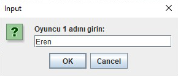
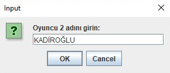
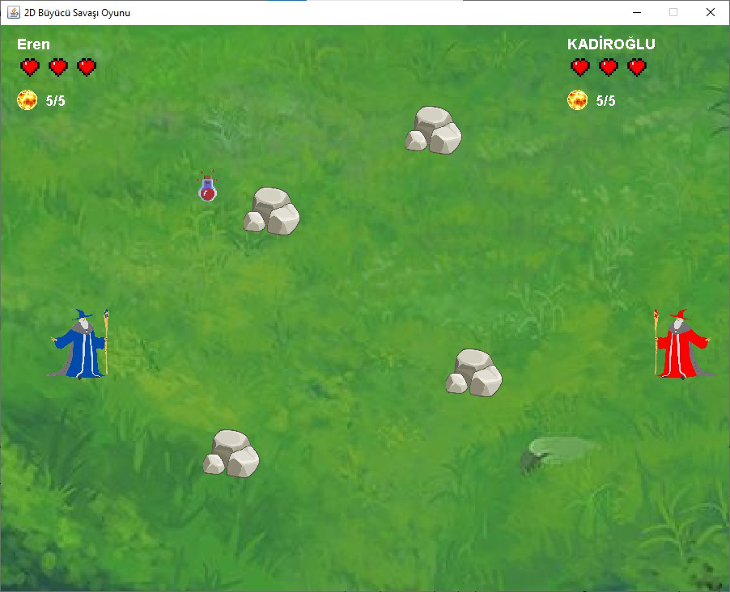
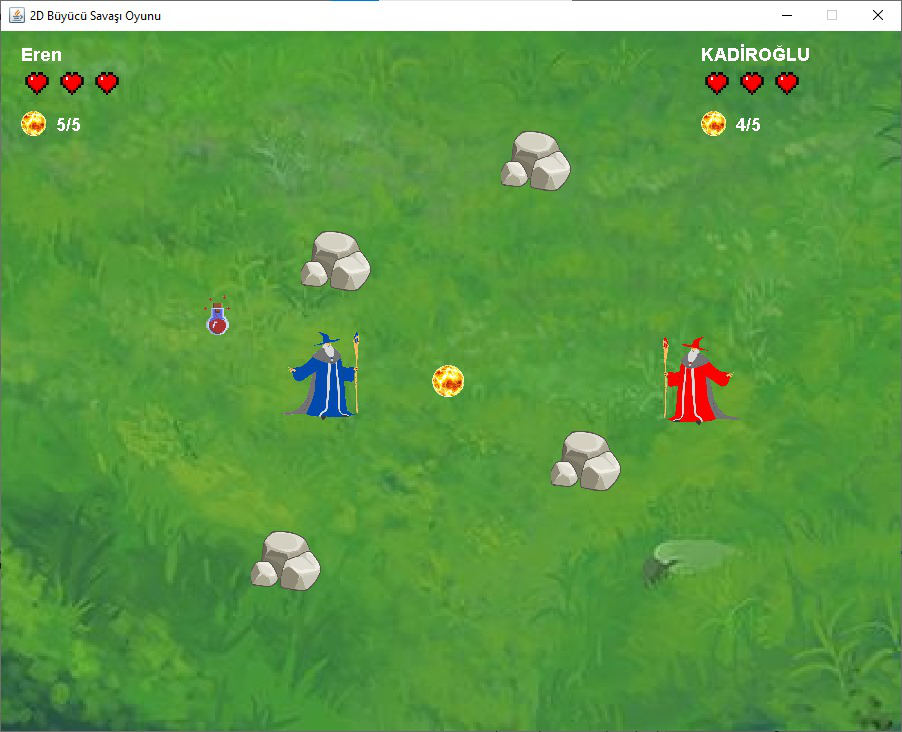
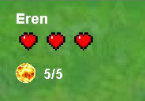
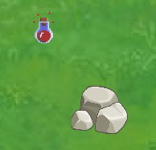
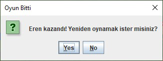

2D Büyücü Savaşı Oyunu







Açıklama
2D Büyücü Savaşı Oyunu, iki oyuncunun aynı bilgisayar üzerinden rekabet edebildiği eğlenceli ve dinamik bir savaş oyunudur. Oyuncular, kontrol ettikleri büyücü karakterlerle arenada birbirine karşı büyü saldırıları yaparak rakibinin canını sıfırlamaya çalışır.
Harita üzerindeki engeller, oyunculara hem savunma hem de strateji geliştirme imkanı sunarken, gerçek zamanlı çarpışma tespiti ve skor takibi ile oyun heyecanı sürekli canlı tutulur. Basit kontrolleri ve keyifli grafikleriyle her seviyeden oyuncuya hitap eden oyun, özellikle arkadaşlar arasında eğlenceli ve rekabetçi mücadelelere zemin hazırlar.
Özellikler
- Oyuna başlarken oyunculardan kullanıcı adı alma
- İstenilen yöne hareket sistemi
- Bakılan yönde büyü atabilme
- Engellere takılma
- Can sistemi
- Mermi sistemi
- Rastgele çıkan can iksiri
- Oyun bitince yeniden aynı kullanıcı adlarıyla hızlı başlatabilme